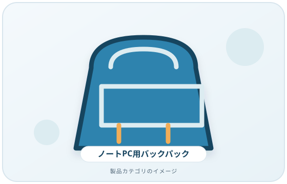
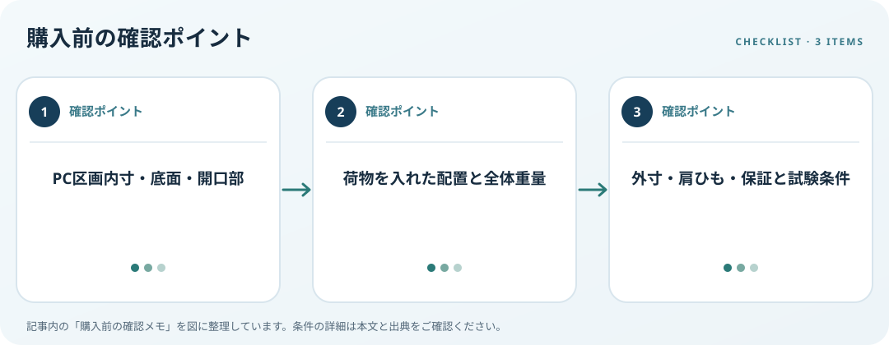

バッグのPC区画寸法、荷物の配置、外寸、調整機能と持ち運び方を整理します。この記事では仕様の確認順を整理します。
画像・ボタンはAmazonアソシエイトリンクです。適格購入により紹介料を得る場合があります。

Amazon.co.jpで「ノートパソコン バックパック PC収納」を探す ↗

PC区画の内寸を確認
ノートPCの幅・高さ・厚さをメーカー仕様で調べ、バッグ区画の内寸と比べます。バッグ外寸や対応インチだけでは内部寸法が分からないことがあります。区画の底面、開口部、ファスナーの位置、PCを出し入れする向きを確認します。
荷物の配置を考える
充電器、書類、飲み物、周辺機器を同時に持つか決め、ポケット数だけでなく各区画の寸法を見ます。硬いアダプターがPCに当たらないか、ケーブルを分けられるか、置いた時に自立するかも確認します。入れる物を含む全体重量も想定しましょう。
運搬条件と保証を照合
肩ひもの調整幅、持ち手、背面、ファスナー、手荷物としての外寸を確認します。保護性能はメーカーの試験条件や保証書を読み、素材の見た目だけで耐衝撃・防水と断定しません。通勤、通学、短い移動など実際の使い方に合わせます。
購入前の確認メモ
- PC区画内寸・底面・開口部
- 荷物を入れた配置と全体重量
- 外寸・肩ひも・保証と試験条件
この記事は出典の公開情報を購入前の確認項目に整理したもので、特定商品の使用・実測・レビュー・ランキング・価格・在庫の調査は行っていません。購入時には利用機器メーカーの最新仕様をご確認ください。
出典
- Find information about your Windows device — Microsoft（確認日: 2026-10-10）
- Surface Pro specifications — Microsoft（確認日: 2026-10-10）